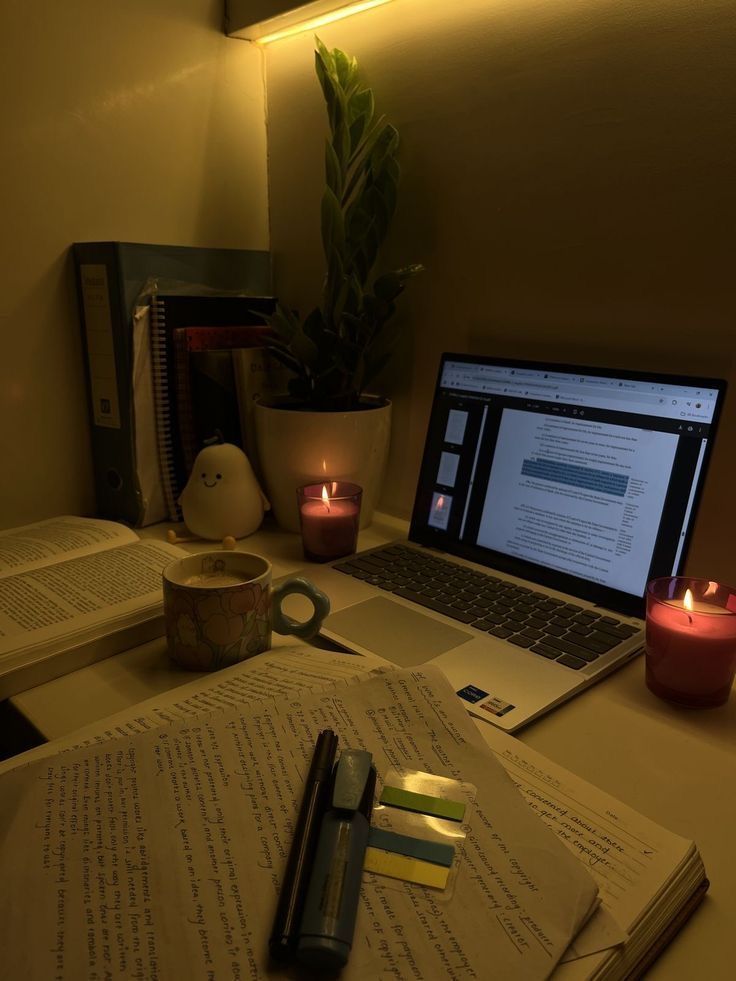

My journey began with a curiosity for both technology and creativity. As a Software Engineering student, I enjoy learning how to solve real-world problems through code. At the same time, I've always loved cooking and sharing everyday experiences, which inspired me to start creating content that reflects my interests and personality.
I'm inspired by the idea that small, consistent efforts can make a meaningful impact. Whether I'm developing a software project, trying a new recipe, or creating a YouTube video, I see every project as an opportunity to learn, improve, and connect with others. My love for cozy aesthetics and simple living also influences the way I present my work, making it feel warm, welcoming, and authentic.
As I continue to grow, my goal is to build a career that blends technology with creativity. I hope to create software that solves meaningful problems while producing content that inspires, educates, and encourages others to pursue their passions with confidence and consistency.